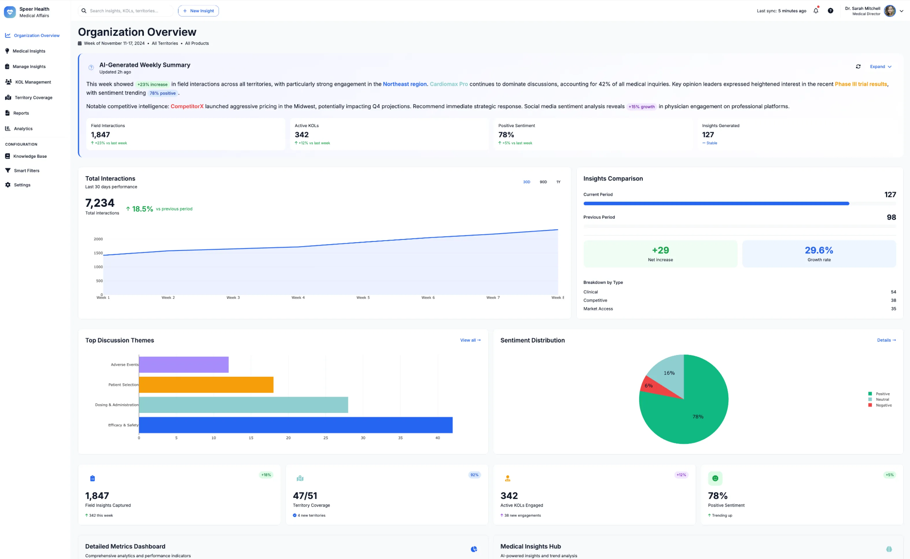
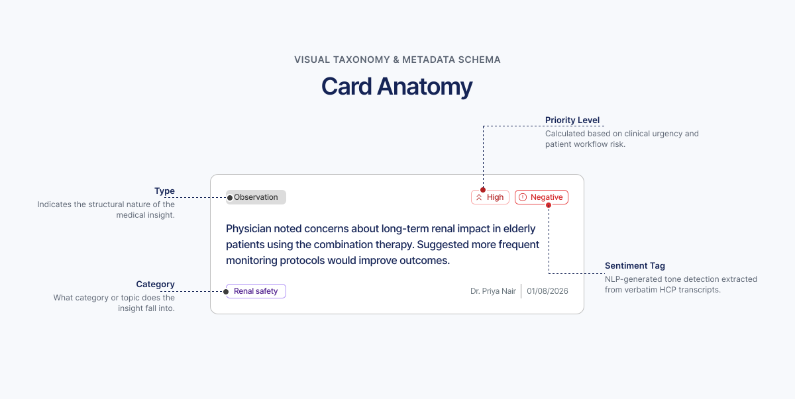
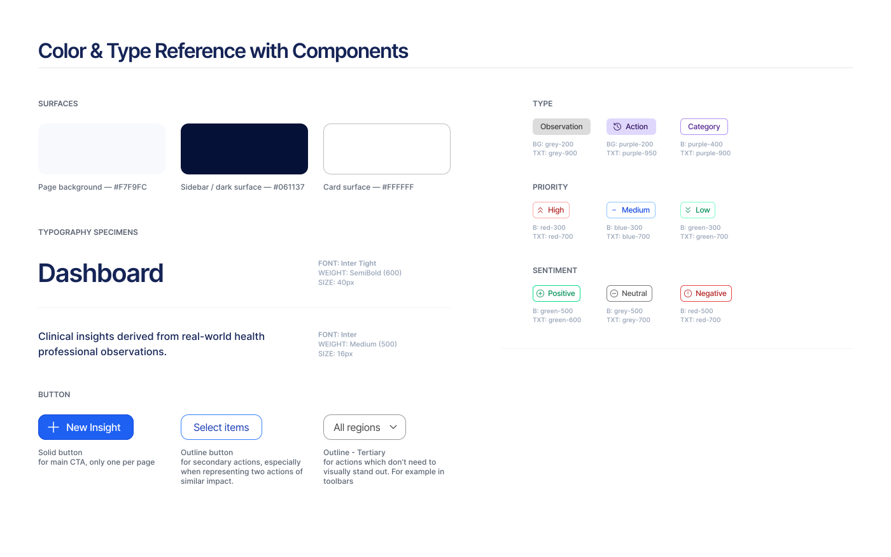
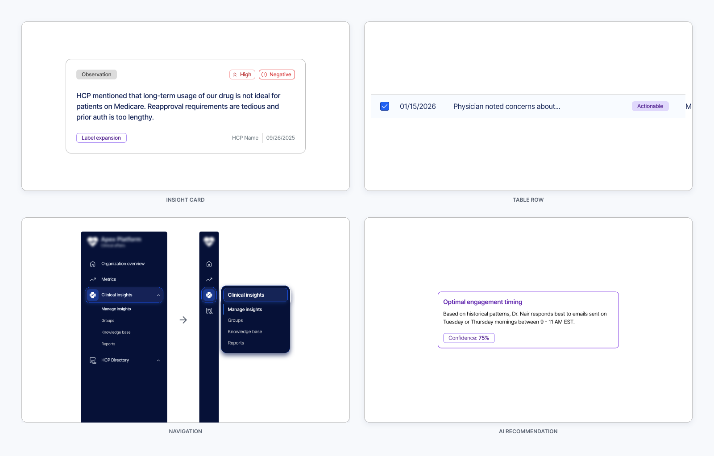

Company and product names modified per NDA. The screens and prototype shown are unmodified design work, shared with permission.
Summary
- Problem. An AI-generated prototype was functionally complete but structurally empty: colors carried no consistent meaning, no hierarchy, nothing signaling trustworthiness to an enterprise buyer.
- Role. Solo, design to handoff. Figma only; build handed to the client's engineering team.
- Impact. A full information-architecture rebuild, a three-axis semantic tagging system, and a reusable navigation pattern, delivered in two weeks, start to handoff.
- Stack. Figma · Smart Animate prototyping · semantic color/tagging system
Explore the prototype
This is the actual file, not a recording of it. Click through it the way a stakeholder review would, every transition is real Smart Animate, including the hover states on cards and the filter toolbar, not static frames stitched together.
Context
The client had a working, AI-generated prototype and wanted to bring it to healthcare enterprise buyers as professional software, not as an AI demo. It worked. It just didn't hold together. The same red or blue showed up on a metric, a chart, and a status tag with no shared logic tying any of it together, and nothing about the interface signaled that this system could be trusted with a hospital's or a pharma company's data.
An AI agent can generate a functionally complete interface fast. It can't originate a system, a color that always means the same thing, a tag hierarchy that still works past the tenth card, an accessibility decision made on purpose. That gap, between functionally complete and actually systematic, is what two weeks went toward closing.

Why the colors needed logic, not just consistency
The vibe-coded UI used a lot of color, applied inconsistently, meaning nothing from one screen to the next. The fix started with a rule, not a palette: every status a user needs to read at a glance gets a color and an icon and a label, always in that same combination, everywhere in the product. Every insight card carries three of these independently, type (Observation, Insight, Actionable, Impact), priority (High, Medium, Low), and sentiment (Positive, Neutral, Negative), so a card can be high-priority and negative at once and still read clearly, something a single flat color code can't do.
That rule serves two readers at once. A pharma professional scanning fifty cards needs to tell severity apart without stopping to think, and a colorblind user needs the same information without relying on color at all. The client's own brief made the second reader explicit too: templates and components that scale into an enterprise product, built on a semantic system specific enough that its logic could eventually be extrapolated by an AI or LLM system downstream, not just read by a person.


The system, screen by screen
Dashboard. Same underlying data as the vibe-coded version, restructured into named, scannable sections, AI-Generated Weekly Summary split into Top Risks vs. Top Opportunities, Activity Overview, Quality & Efficiency Metrics, Strategic Intelligence, Network & Geography, Departmental Deep Dives. This is the clearest single artifact for information re-architecture over visual polish.
Manage Insights. Card view, a selection mode for bulk actions, and a table view for power users who want the same data dense and sortable. The tagging system above carries through identically across all three.
Collapsed sidebar. For a user who lives in this tool all day, the sidebar collapses to icons with sub-navigation on hover, trading a persistent label for screen space given back to the data.
HCP Profile. A doctor's record: identity, an engagement timeline, tabbed content for Publications, Clinical Trials, and Speaking & Social. The AI Recommendations panel sits visually apart, a distinct violet accent and a confidence percentage on every suggestion, so the model's opinion is never mistaken for a fact in the record.

Built to be read twice
Most of my systems work starts before the AI touches anything. This project starts after it, reading AI output critically and rebuilding the logic underneath it without a rewrite from scratch. An AI agent can generate a functionally complete interface in minutes. It can't decide what a color should always mean, or notice a tag hierarchy stopping working past the tenth card.
The brief asked for a system specific enough to be read by an AI downstream, not just a person, the same instinct behind Blueprint's token structure being built for both a human developer and an LLM from day one. See Blueprint Design System.
Motion
Screen transitions run at 300ms with an ease-in-and-out curve, Smart Animate genuinely morphing shared layers like the sidebar and header rather than cutting between screens. Card and filter-toolbar hovers sit at 100ms, fast enough to read as instant. Nothing bounces. This is a professional healthcare dashboard whose literal brief was to build trust, and a playful interface would have undercut that. Explore the actual timing in the embed above rather than a description of it.
Outcomes
-
2 weeks
Full information-architecture rebuild, a three-axis tagging system, and a reusable navigation pattern across five screen states, delivered solo, start to handoff.
Design delivered and handed off to the client's engineering team within a two-week freelance engagement: a full information-architecture rebuild, a three-axis tagging system, and a reusable navigation pattern, solo, start to handoff. This case study documents the design decisions and system architecture behind that delivery.